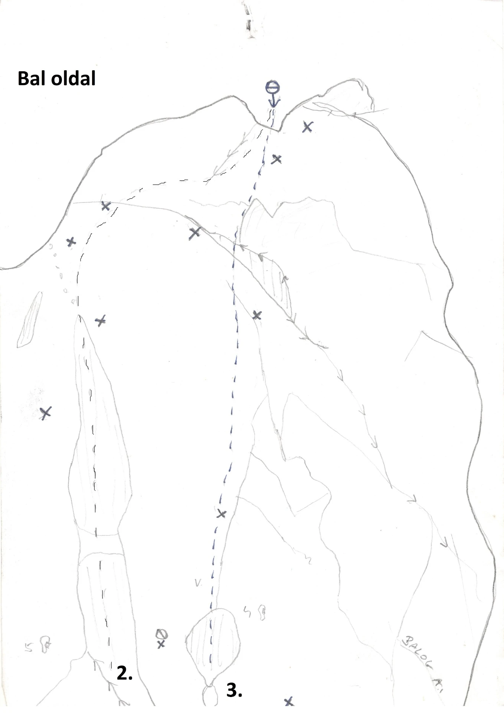

| # | Út neve | 💪 | ⛓️ | 🧶 |
|---|---|---|---|---|
| 0 | Beszálló | III | 0 | 5m |
| 1 | Kanyar (Balesetveszélyes, csak felbiztosítással!)Másik terület! | VI- | ? | ? |
| 2 | Kürtő | ? | ? | 13m |
| 3 | Idegenek útja | V | ? | ? |
| 4 | Repedés (Nittelt trad) | V- | 5b 2j | 25m |
| 5 | Tű direkt jobbra | VI | 7b +1F ~20mm | 22m |
| 5a | Tű direkt balra | VI+ | 5b +1F ~20mm | 22m |
| 6 | Lányos út (Tradban is kimászható) | IV | 6b 1j | 25m |
| 6a | Yani variál | V | ? | 22m |
| 7 | Odúsor | VI | 4b 1j | 25m |
| 8 | Lyuksor balra | VI | 5b 1j | 15m |
| 8a | Lyuksor direkt (Kulcs az utolsó akasztásnál!) | V / C2. Teteje: VII | 4b 3j | 15m |
| 8b | Lyuksor variáns jobbra | VI | 4b 3j | 15m |
| 9 | Variációk egy témára 1 | VI | ? | ? |
| 10 | Variációk egy témára 2 | VI+ | ? | ? |
| 11 | Variációk egy témára 3 | VII+ | ? | ? |
| 12 | Téma | VIII | ? | ? |
| 13 | XXX | VIII+ | ? | ? |
| 14 | Kovács István emlékút (Elhanyagolt, törős, körülményesen biztosítható!) | V | ? | 15m |